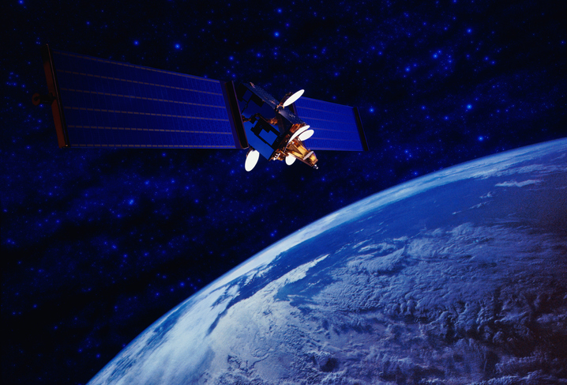
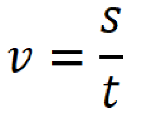
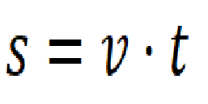
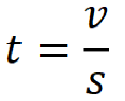

Ruch jednostajny
*Symulacja ma jedynie przedstawiać zjawisko ruchu jednostajnego. Odległości oraz wielkości planet i satelitów są przybliżone. Czas jest przyspieszony na rzecz prezentacji i nie biegnie zgodnie z realnym. Pominięte są także wszystkie siły oporu i grawitacji.
1) Zaobserwuj jak na symulacji zmienia się prędkość rakiety w zależoności od wprowadzonych wartości. Pamiętaj, że ruch jednostajny zaczyna się dopiero, gdy statek wyjdzie poza obszar Ziemi.
Typem ruchu, który będzie omówiony w tym rozdziale jest ruch jednostajny prostoliniowy. Występuje on wtedy, kiedy ciało porusza się z taką samą, niezmienną
prędkością po linii prostej. Spotykamy się z tym ruchem kiedy, zgodnie z 1 zasadą dynamiki Newton'a, na ciało nie działa żadna siła lub
działające na nie siły się równoważą, oczywiście pod warunkiem, że wcześniej na ciało działa jedna niezrównoważona siła, która nadała mu prędkość, w innym wypadku
ciało się nie rusza.

Na przykład, jeśli w przestrzeni kosmicznej znajduje się satelita i nie jest on przyciągany przez żadną planetę to nie porusza się. Jeżeli jednak popchnęlibyśmy do w pewnym kierunku, to
przyspieszyłby on w tym samym kierunku, a następnie zaczął poruszać się ruchem jednostajnym w nieskończoność, dopóki coś by go nie zatrzymało.

Teraz gdy już wiemy czym jest ruch jednostajny, możemy dowieedzieć się jak obliczać takie wartości jak droga, czas, czy prędkość.

Prędkość (oznaczona v) w ruchu jednostajnym jest równa ilorazowi pokonanej przez ciało drogi i czasu jej pokonania. Jest ona wprostproporcjonalna
do drogi i odwrotnie proporcjonalna do czasu. Oznacza to, że gdy droga się wydłuża, a czas pozostaje niezmienny, to prędkość wzrasta.
Natomiast, gdy czas się wydłuża, a droga pozostaje niezmienna, to prędkość maleje.
Po przekształceniu wzoru otrzymujemy wzory na drogę i na czas.


Podsumowanie:
- W ruchu jednostajnym prostoliniowym ciało porusza się ze stałą prędkością po linii prostej.
- Na to ciało nie działają żadne siły lub działające siły się równoważą.
- Prędkość jest ilorazem drogi przebytej przez ciało oraz czasu.